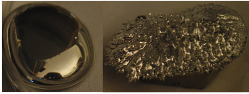

Magnetic liquid metal suspensions
 |
To develop these materials, we started with characterization of the surface properties and mechanical behavior of liquid metals [Xu et al., Phys. Fluids (2012), Xu et al., PRE (2013)], Xu et al., JoVE (2014)]. We also learned how to measure magnetic susceptibility of suspensions [Bai et al. (2018)]. These advances led to a suspending process in which an acid is used to clean and prevent oxidation of the liquid metal and suspended metal particles so that they can wet and suspend [Carle et al. (2017)]. With magnetic suspended particles we can reach a magnetic permeability up to 5 times larger than a pure liquid metal, which would allow stronger MHD effects than sodium, the current standard. The addition of nonmagnetic particles allows us to tune the viscosity independently by a factor of 160 to control turbulent effects separately. We anticipate these material properties are at or near the thresholds required to observe several MHD effects. For example, to create a spontaneous dynamo in a flow on the scale of about 20 cm, or reach a magnetic Reynolds number of 1 (enough to see weak magnetohydrodynamic effects) in a laminar flow, or to observe Lorentz forces where the generated magnetic field could affect the flow in a feedback loop. Only further investigation will tell if these phenomena can be produced, but if they can be produced in small-scale laboratory experiments it opens up many possibilities for the use of MHD phenomena in device-scale applications.
My work in this field stopped when Yale refused to provide the required facilities of temperature control and a fumehood for this NSF-funded work. I still believe the materials are promising for magnetohydrodynamic studies, and am happy to collaborate with other who are interested in working with them.
Funding: NSF CBET 1255541 (Fluid Dynamics)